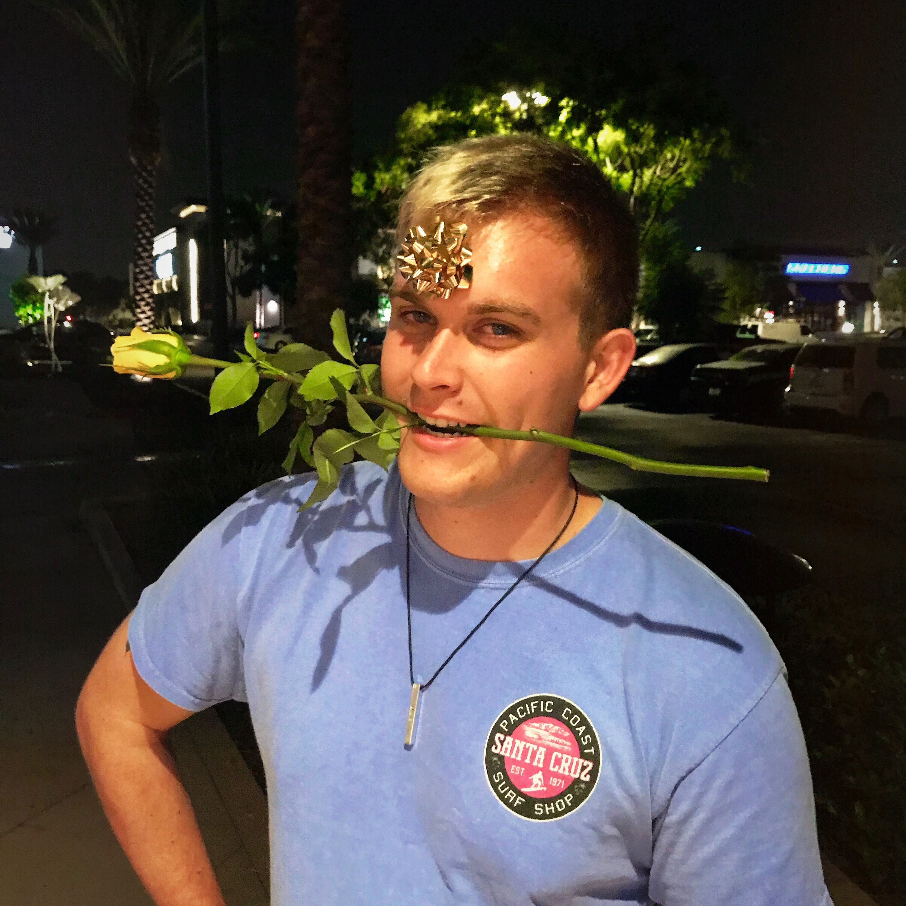

I am graduating with a Bachelor's in Computer Science in December 2018. Hire me to do Computer Science for you!
- Education
-
California State University Long BeachGraduating: Dec 2018
Long Beach, CA
- Major: Computer Science
- GPA: 3.86
Las Positas Community CollegeAug 2013‐May 2016
Livermore, CA
- Experience
-
High Performance Computing (HPC) Student InternJune 2018–Aug 2018
Lawrence Livermore National Laboratories: Livermore, CA
- Built and configured a 10-node HPC cluster capable of complex calculations (Linux)
- Utilized Puppet to automate parts of the cluster set up
- Expanded Pyvmomi (VMware vSphere API) functionality on a team of 4 (Python)
Computation Student InternJune 2017–June 2018
Lawrence Livermore National Laboratories: Livermore, CA
- Developed iOS application for laptop inventory management (Swift)
- Handled imaging of computers for the influx of summer interns
- Diagnosed customer computers and assisted in solving computer issues
Clerical Student InternJune 2012–Aug 2016
Sandia National Laboratories: Livermore, CA
- Maintained project database (Fortis Edit Station)
- Organized and reviewed building water meter readings
- Skills
-
Proficient
- Windows 7, 8, 10; MacOS 10.12, 10.13; C, C++, Java, Python, SQL
Basic
- Linux/Unix, Bash, Vi, JavaScript, Haskell, Assembly, Swift, Networking, Puppet, HTML, Apache
- Extracurriculars
-
- CSU Long Beach Ski and Snowboard Team
2016–2018
- Assembled my personal computer from bought components
2015
- Yearbook Editor (Croce Elementary, Livermore, CA)
2013
- Voting Booth Worker
2011
- References
- Available on request
- Links
-
Find This Template on GitHub
Last Updated: August 7, 2018